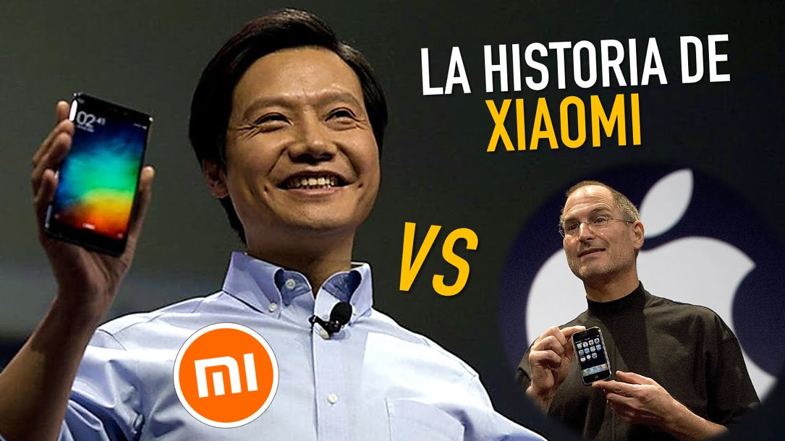
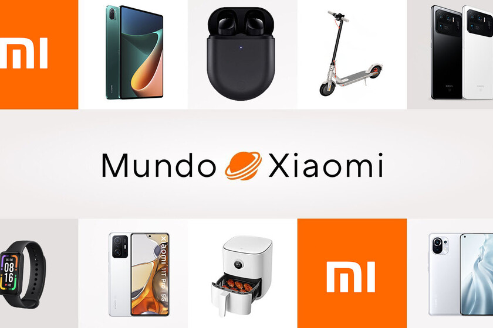
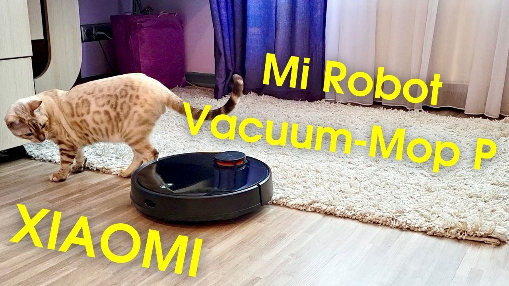

Historia de Xiaomi
La empresa fue fundada en abril de 2010 por Lei Jun y siete socios que tenían experiencia en otras compañías de tecnología como I-D de Motorola, Kingsoft y Google China. Lei Jun es el CEO de Xiaomi y es apodado el “ Steve Jobs chino ” debido a su mente brillante y cuán duro ha trabajado para lograr que la empresa que fundó tuviera éxito.
Un año después, la compañía lanzó MiUI que, de acuerdo con el portal Mundo Mi, es una capa de personalización basada en el sistema Android de Google y que está presente en todos los dispositivos de la marca.
No obstante, el primer éxito de Xiaomi fue el Mi2 , el primer dispositivo en tener el Snapdragon SoC y del cual se vendieron 10 millones de unidades en menos de un año, lo cual le dio popularidad a la marca en mercados de lugares como Estados Unidos , Australia y Europa .

¿Quiénes somos?
Somos una compañía enfocada en el desarrollo de smartphones y dispositivos inteligentes conectados mediante una plataforma IoT y fue creada con el objetivo de ser amigable con el usuario para quienes espera ser la “compañía más genial”, como señala su sitio web , en donde aseguran que tienen un compromiso con la innovación constante enfocada en la calidad y la eficiencia.
Catálogo de Productos
Explora la amplia gama de productos Xiaomi: smartphones, wearables, y dispositivos inteligentes.
Smartphones
- Xiaomi 13 Pro
- Redmi Note 12
- Poco X5
Gadgets
- Mi Smart Band 7: tu compañero fitness ideal.
- Xiaomi Watch S1: elegancia y funcionalidad en tu muñeca.
- Xiaomi Electric Scooter 4: movilidad ecológica y moderna.
- Mi True Wireless Earbuds: sonido envolvente sin cables.
- Redmi Buds 4 Pro: audio premium con cancelación de ruido.
- Mi Air Purifier Pro: respira aire limpio y puro en casa.
- Xiaomi Robot Vacuum Mop 2: limpieza automática y eficiente.
- Mi 11 Ultra: un smartphone con cámara de nivel profesional.
- Xiaomi Mi TV Q1: disfruta del cine en casa con resolución 4K.
- CyberDog: un robot que redefine la tecnología personal.
Innovaciones de Xiaomi
Desde su primer teléfono hasta sus innovadores dispositivos para el hogar, Xiaomi ha transformado la industria tecnológica.
Xiaomi es conocida por su enfoque innovador en tecnología, destacándose en áreas como carga rápida e inalámbrica con sistemas como HyperCharge, pantallas sin bordes y curvadas como en el Mi MIX Alpha, cámaras avanzadas de hasta 108 MP con lentes líquidas, y dispositivos plegables como el Mi MIX Fold.
Además, lidera en el Internet de las cosas (IoT) con su ecosistema Mi Home, wearables como la Mi Band, y audífonos inalámbricos como los Mi True Wireless Earbuds, que ofrecen alta calidad de sonido a precios accesibles.
También incursiona en televisores 8K, robots como el CyberDog, tecnología de IA, sistemas de refrigeración líquida en smartphones, y soluciones sostenibles como paneles solares portátiles, consolidándose como líder en innovación tecnológica accesible.

Proyectos y Visión Futura
La visión futura de Xiaomi se centra en convertirse en líder global en tecnología innovadora, accesible y sostenible. La compañía busca expandir su ecosistema inteligente integrando aún más dispositivos con inteligencia artificial (IA) y el Internet de las cosas (IoT) para ofrecer experiencias interconectadas en hogares y ciudades inteligentes.
Además, planea consolidar su posición en tecnologías emergentes como la realidad aumentada (AR), realidad virtual (VR), y conectividad 6G, mientras avanza en soluciones sostenibles, como el desarrollo de productos energéticamente eficientes y el uso de materiales ecológicos. Xiaomi aspira a democratizar la tecnología, llevando productos de alta calidad a todos los rincones del mundo.
Xiaomi continúa innovando con productos como el Mi Robot Vacuum y el Mi Air Purifier, entre otros.
